Key Takeaways
- Publish Microsoft Teams as a Windows 365 Cloud App directly through Intune, giving users seamless access without assigning a full Cloud PC.
- Configure Cloud App assignments and permissions in Intune to securely deliver Teams to the right users and groups.
- Provide a native Windows experience with Microsoft Teams running from a Cloud PC while keeping apps and data centralized.
- Simplify app management by leveraging Intune and Windows 365 Cloud Apps for easier deployment, updates, and a consistent user experience.
In this article, I’ll explain how to publish the Microsoft Teams Windows 365 Cloud App using Intune. Microsoft has enhanced Windows 365 Cloud Apps with support for .appx and .msix packaged applications. This means admins can now discover and publish apps like Microsoft Teams and the new Outlook directly through the existing Cloud Apps workflow in Intune, making app management even more seamless.
Create a New Provisioning Policy for Windows 365 Cloud Apps
To create a new Windows 365 Provisioning Policy for Windows 365 Cloud Apps, log in to the Microsoft Intune Admin Center using your administrator credentials.
- Navigate to > Devices > Manage Windows 365 Cloud PCs > Provision Cloud PCs
- Click on Provisioning policies > +Create policy

In the General tab, you can now add the following settings. Windows 365 Cloud Apps allow administrators to grant users secure access to specific applications hosted on a Cloud PC, eliminating the need for a dedicated Cloud PC for each user. These apps run on Windows 365 Flex Cloud PCs in shared mode.
- Name: Windows 365 Cloud Apps – Microsoft Teams
- Description: Optional
- Experience: Access only apps which run on a Cloud PC
- License type: Frontline (Ensure that you have a valid Flex license available in your tenant)
- Frontline type: Shared
- Join type: Microsoft Entra Join
- Network: Microsoft hosted network
- Geography: India
- Region: Central India
- Use Microsoft Entra single sign-on: Yes (Check the box)
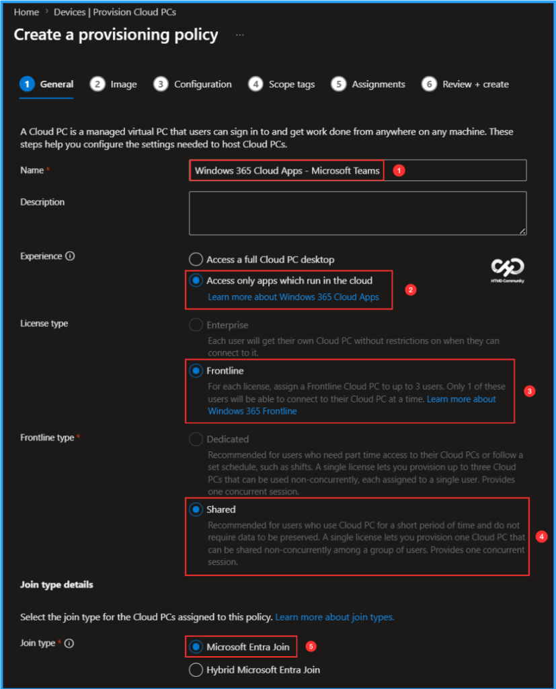
You can choose an image to create the Frontline Cloud PC or create a new custom image. I will select the latest available Gallery image, which is Windows 11 Enterprise + Microsoft 365 Apps 25H2. You can also view the available apps in this specific image.
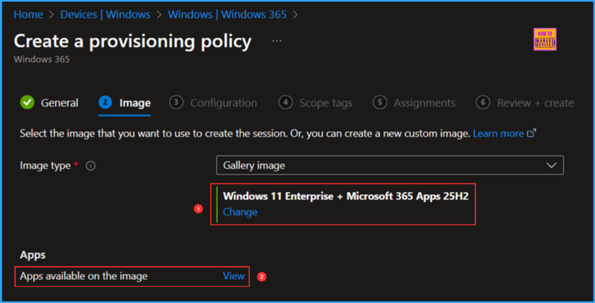
Here are the apps available on the Windows 11 Enterprise + Microsoft 365 Apps 25H2 Gallery Image. The apps displayed in the selected image for this policy are ready for use. You can choose to make any or all of these apps accessible to users in All Cloud Apps. Currently, around 50 apps are available in this image, including the new MS Teams and Outlook (new).
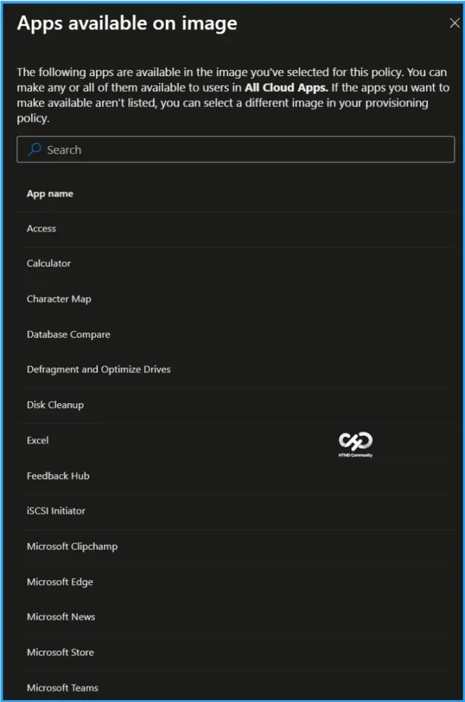
The next tab focuses on Windows settings, Cloud Apps naming, Windows Autopilot and User Experience Sync. Select the options listed below.
- Language & Region: English (United States)
- Apply device name template: Yes (Check the box)
- Enter a name template: W365CAPPS-%RAND:5% (A maximum of 15 characters is allowed)
- Windows Autopilot: None
- Enable User Experience Sync: Yes (Check the box)
- User Storage Size: 16 GB (Sizes available range from 4 GB to 64 GB)
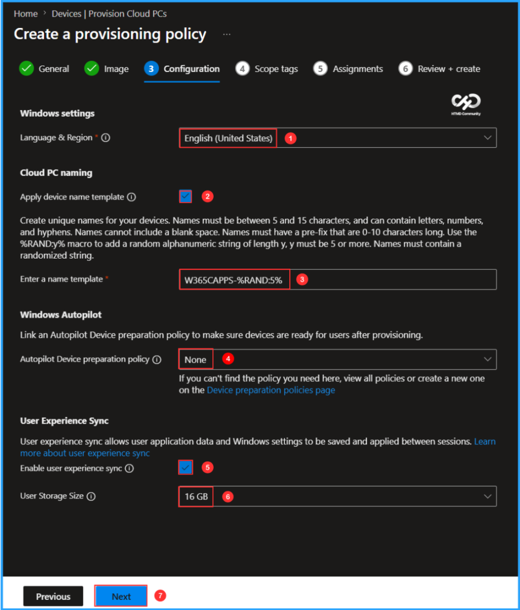
On the next page, keep the Scope tags set to Default. If your tenant has custom scope tags, select them based on your policy needs, and then click Next.
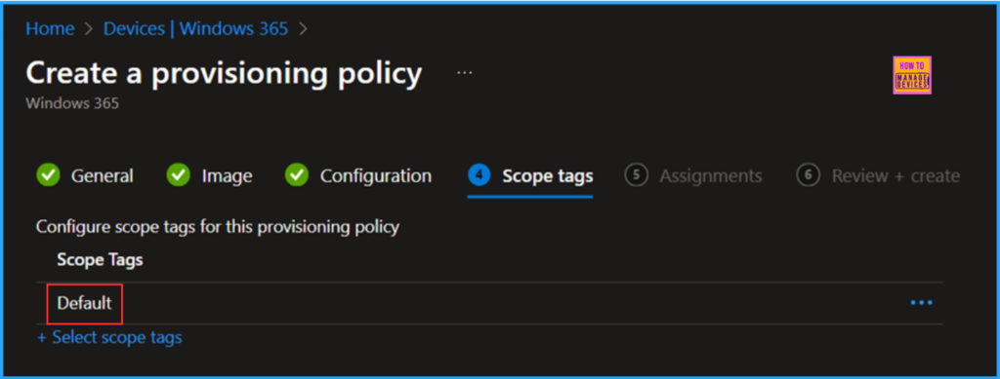
In this section, select the group or groups of users who will receive Windows 365 Cloud Apps. I will assign the policy to the W365 Cloud App – Users. To do this, click on Add groups and choose the appropriate user group. Then, click on the Select one hyperlink under the Cloud PC size option.
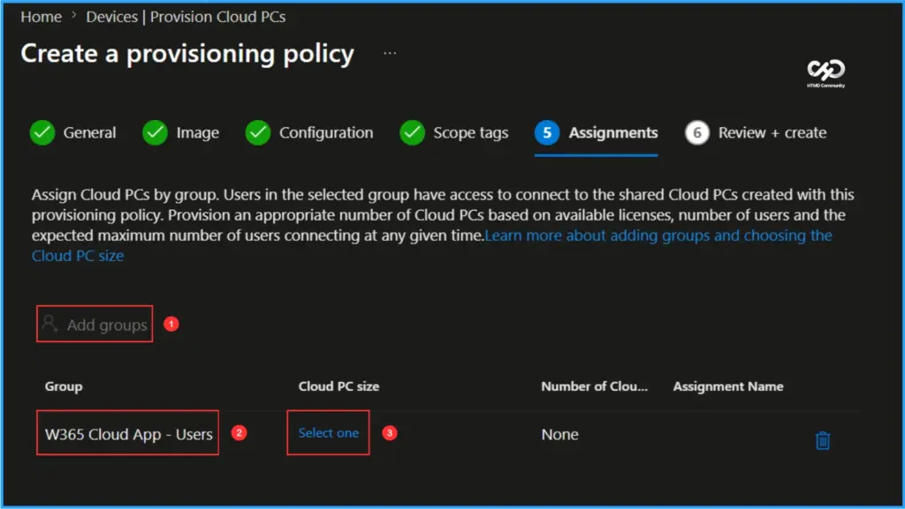
Choose the size of your Cloud PC based on your available Windows 365 Flex license. Any member of the group can access shared Frontline Cloud PCs. Select a Cloud PC size for all group members to use and provide a descriptive name for easier identification.
- Available Cloud PCs: Cloud PC Frontline 2vCPU/8GB/128GB (1 shared Cloud PCs available)
- Assignment name: HTMD – W365 Cloud Apps
- Number of Cloud PCs: 1
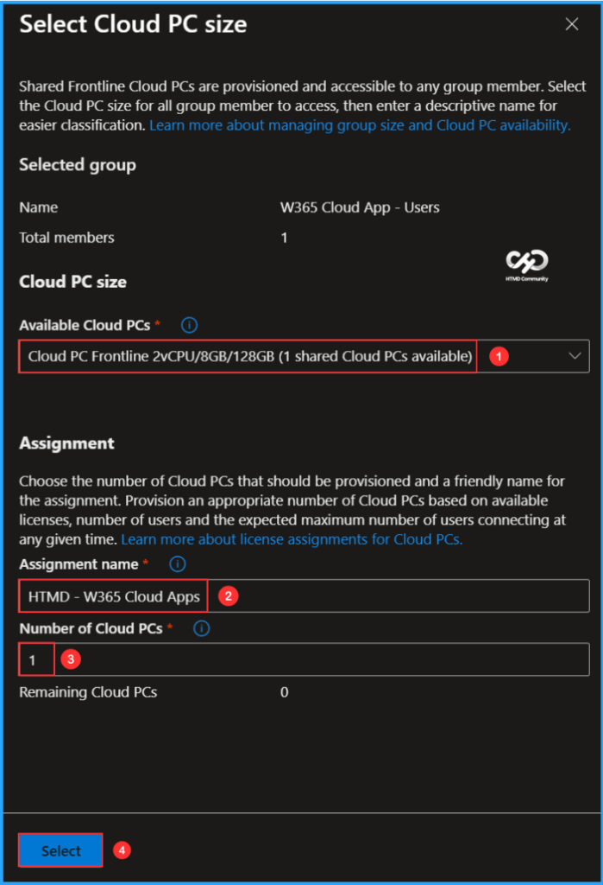
On the Review + create page, review all settings for the Windows 365 Cloud Apps – Microsoft Teams Provisioning Policy. After confirming, click Create to deploy the policy.
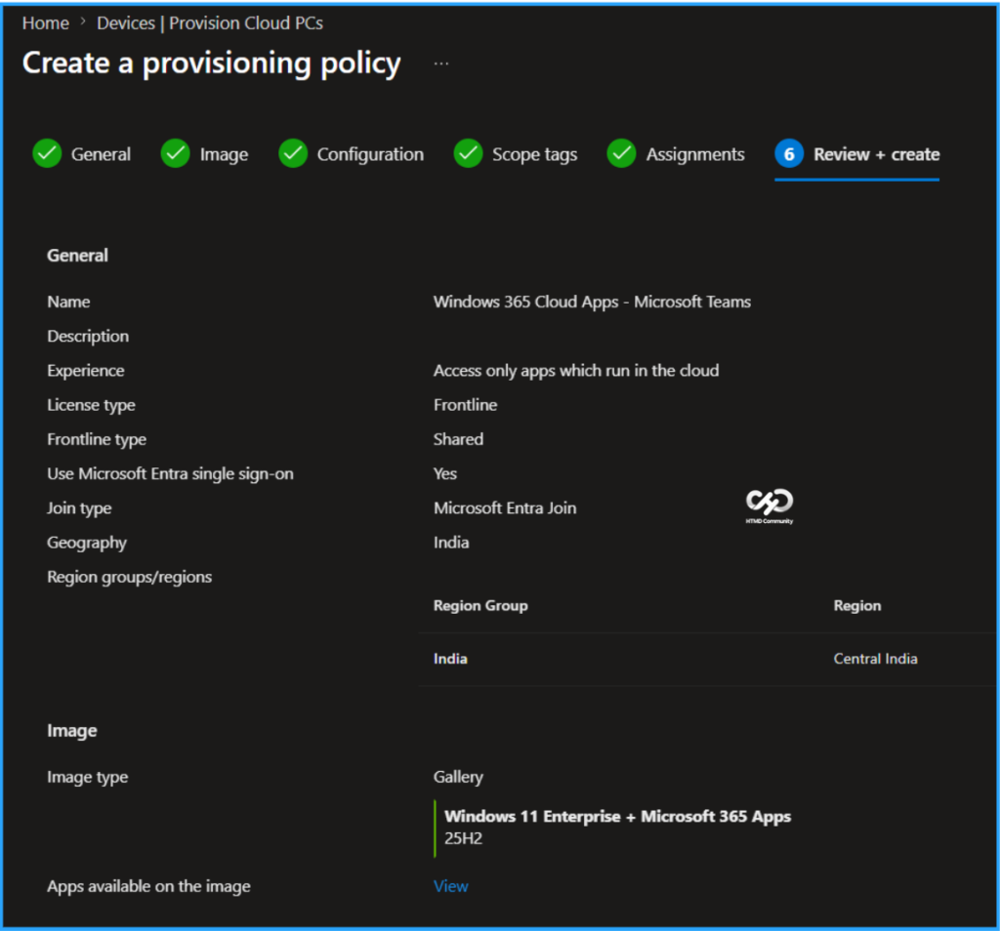
Publish the Microsoft Teams Cloud App
The new Provisioning Policy for Windows 365 Cloud Apps has been deployed to the HTMD – W365 Cloud Apps user group. Please allow some time for the policy to take effect. Initially, it will create a Cloud PC with the following specifications: Frontline Shared 2vCPU/8GB/128GB (W365CAPPS-FNN28), which will provide access to the Cloud app experience in shared mode.
Multiple users assigned to this group will be able to access Windows 365 Cloud Apps without needing individual Cloud PCs. To monitor the status of the Cloud Apps creation and deployment, please follow the steps outlined below in the Intune Portal.
- Navigate to Devices > Manage Windows 365 Cloud PCs > All Cloud Apps. View the available apps, select Microsoft Teams from the list, and click on Publish.
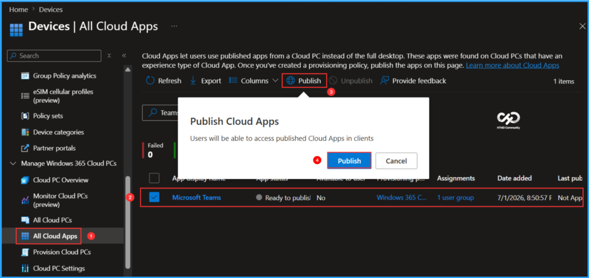
Users will be able to access the published Cloud App in clients. The selected App, including Microsoft Teams, has changed status from Ready to publish to Publishing and then to Published.
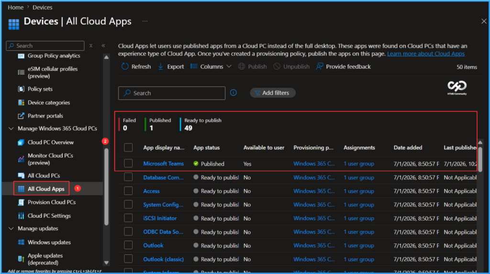
Windows 365 Teams Cloud App End User Experience
It’s time to check our Windows 365 MS Teams Cloud App experience. You can either use the Windows App or access the URL https://windows.cloud.microsoft.com through a browser. Log in with your Windows 365 Cloud Apps user credentials (corporate user credentials). In the Windows app, you will notice a new tab labelled Apps. Click on this tab to view all the published applications available to users, organized by the categories we created in Intune.
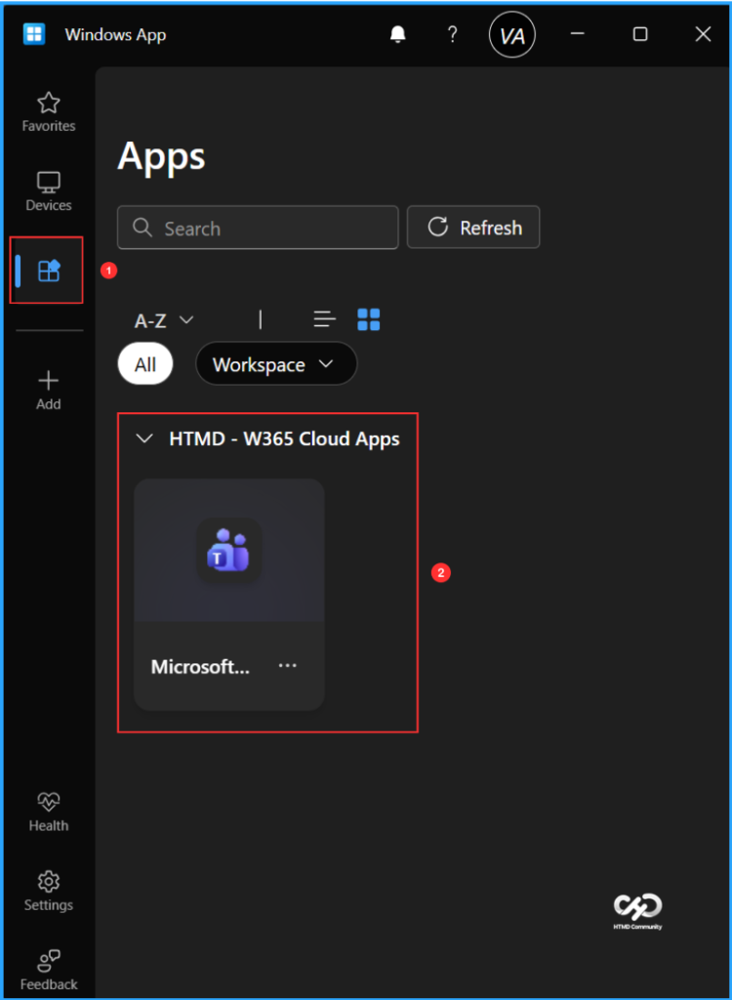
Once you click on connect, the MS Teams App will launch, providing you with an experience similar to that of a locally installed application on your device.
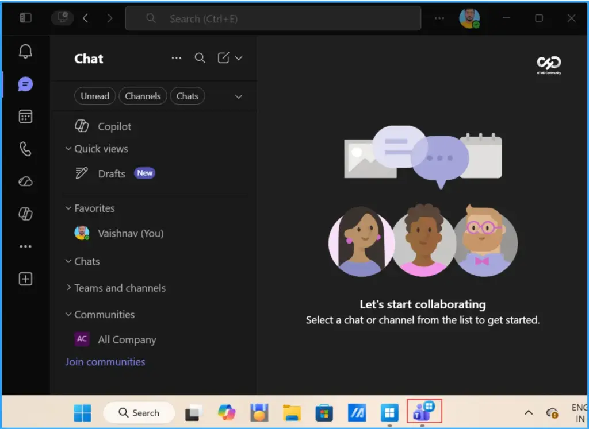
Need Further Assistance or Have Technical Questions?
Join the LinkedIn Page and Telegram group to get the latest step-by-step guides and news updates. Join our Meetup Page to participate in User group meetings. Also, join the WhatsApp Community to get the latest news on Microsoft Technologies. We are there on Reddit as well.
Author
Vaishnav K has over 12 years of experience in SCCM, Intune, Modern Device Management, and Automation Solutions. He writes and shares knowledge about Microsoft Intune, Windows 365, Azure, Entra, PowerShell Scripting, and Automation. Check out his profile on LinkedIn.